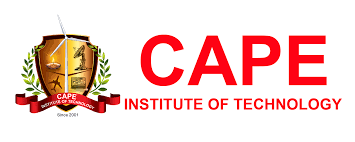
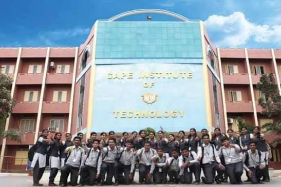

Some are dignified… Some are decorative… Some are distinct… And very few are unique… CAPE INSTITUTE OF TECHNOLOGY is all rolled into one. The mushrooming of engineering colleges has never hindered the progress of the Institution because the vision of CAPE is foresighted and the road map is crystal clear. It is a gifted campus where the presence of the five elements of Nature — the Pancha Boothangal — blend harmoniously. The greenery is an Oasis in the southern tip of the State and Google Earth has marked Levengipuram in its map. Energy is the thread that weaves the Institution. At CAPE we harvest not only energy but young energetic minds with positive forces. Technology is product-based — every minute updates technology, leaving things obsolete. Hence an individual has to be informed of day-to-day changes and implement anything new. The progress of each discipline grows parallel with the research activities of the respective department, and the outcome is product-based. The greenery that colours the campus is the cultivation of Biomass vegetation. Organic manure makes the soil fertile and dairy farms provide sufficient milk products. The sustainable campus has solar electricity and trees that reduce temperatures by 5–6 degrees. The Windmills erected here represent Asia's second-largest windmill fields. CAPE has marked itself as an Eco Education Centre and a symbol of Kanyakumari District — the landmark of South India. Rural Upliftment is the humane gesture of the Institute that has given life to many rural students who are now placed in reputed organisations and remarkable positions. The future of CAPE is promising — it predicts progress and prosperity in the years to come.
Visit Link